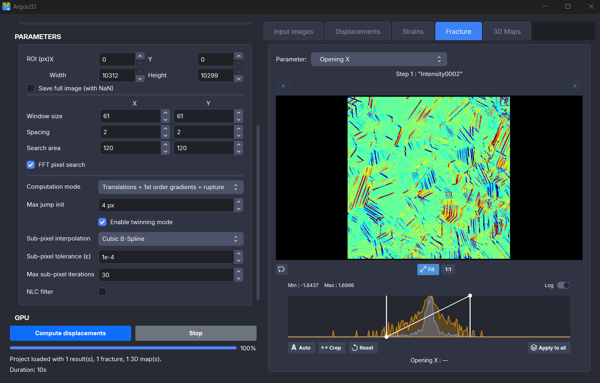
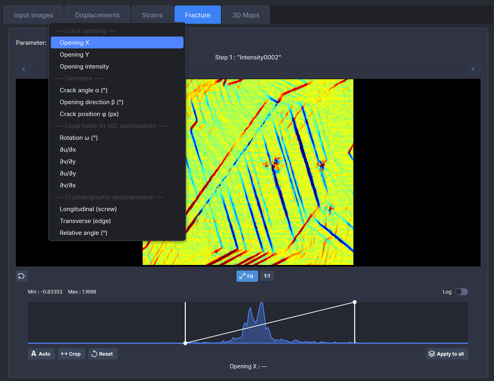
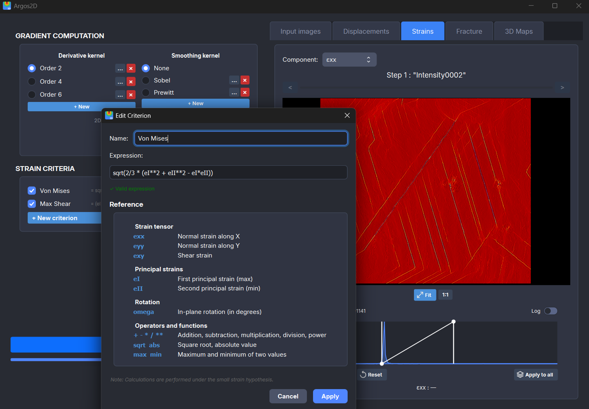
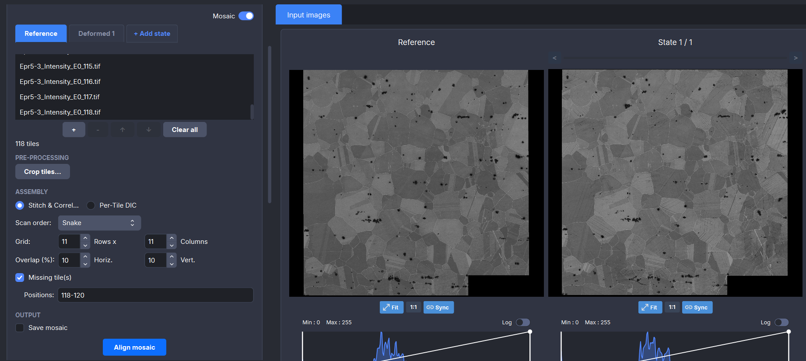

GPU-Accelerated DIC with Discontinuity Enrichment
Argos2D embeds Heaviside-enriched shape functions directly into the correlation, capturing cracks, twins and slip bands.

Dataset from A. Rouwane, D. Texier, J.-N. Périé, J.-E. Dufour, J.C. Stinville et al., Optics and Laser Technology, Vol. 177, 2024. Courtesy of Damien Texier.
Heaviside-Enriched Displacement Fields
Standard DIC assumes continuous displacement inside each subset, which smears out discontinuities across several pixels. Argos adds a Heaviside step function to the correlation model, allowing a sharp jump to be identified within each subset.
The subset shape function is augmented with a jump vector and a Heaviside function:
| φ(x) = | x + u | + | ∇u · (x − x0) | + | u' · H(x − x0) |
| rigid body | first gradient | jump × Heaviside | |||
| Conventional DIC | Heaviside-DIC | ||||
Based on: F. Bourdin, J.C. Stinville, M.P. Echlin, P.G. Callahan, W.C. Lenthe, C.J. Torbet, D. Texier, F. Bridier, J. Cormier, P. Villechaise, T.M. Pollock, V. Valle, Measurements of plastic localization by heaviside-digital image correlation, Acta Materialia, Vol. 157, pp. 307–325, 2018. DOI
Ux displacement field computed on a dataset from A. Rouwane, D. Texier, J.-N. Périé, J.-E. Dufour, J.C. Stinville et al., "High resolution and large field of view imaging using a stitching procedure coupled with distortion corrections", Optics and Laser Technology, Vol. 177, 2024. Dataset courtesy of Damien Texier.
Fracture & Discontinuity Analysis
Dedicated post-processing for cracks, twins and slip bands.
The fracture tab exposes the full enrichment output: crack opening displacement (intensity and direction), crack angle α, opening direction β, and a crystallographic decomposition into screw (longitudinal) and edge (transverse) components relative to the crack front.

Dataset from A. Rouwane, D. Texier, J.-N. Périé, J.-E. Dufour, J.C. Stinville et al., Optics and Laser Technology, Vol. 177, 2024. Courtesy of Damien Texier.
Strain Post-Processing
Customizable derivative kernels and built-in criteria.
Compute the full strain tensor (εxx, εyy, εxy) from displacement fields using separable gradient operators.
- Separable gradient kernels — Sobel, Scharr, centered finite differences, or custom
- Custom expressions — built-in math parser for user-defined strain criteria

Dataset from A. Rouwane, D. Texier, J.-N. Périé, J.-E. Dufour, J.C. Stinville et al., Optics and Laser Technology, Vol. 177, 2024. Courtesy of Damien Texier.
Mosaic Stitching & Batch Mode
Large-area analysis from tiled acquisitions.
Assemble multi-tile acquisitions into a seamless mosaic before running DIC.
- Automated grid layout — row/column organization with configurable overlap, handles missing tiles
- Batch mode — process each tile pair independently without stitching, for high-throughput analysis

Dataset from A. Rouwane, D. Texier, J.-N. Périé, J.-E. Dufour, J.C. Stinville et al., Optics and Laser Technology, Vol. 177, 2024. Courtesy of Damien Texier.
Under the Hood
Core engine specifications.
Get Argos2D
To request a license or try Argos2D, contact us: contact@argos-correlation.com
System requirements
- Windows 10/11 (64-bit)
- NVIDIA GPU (minimum: Turing generation, e.g. GTX 16xx / RTX 20xx)